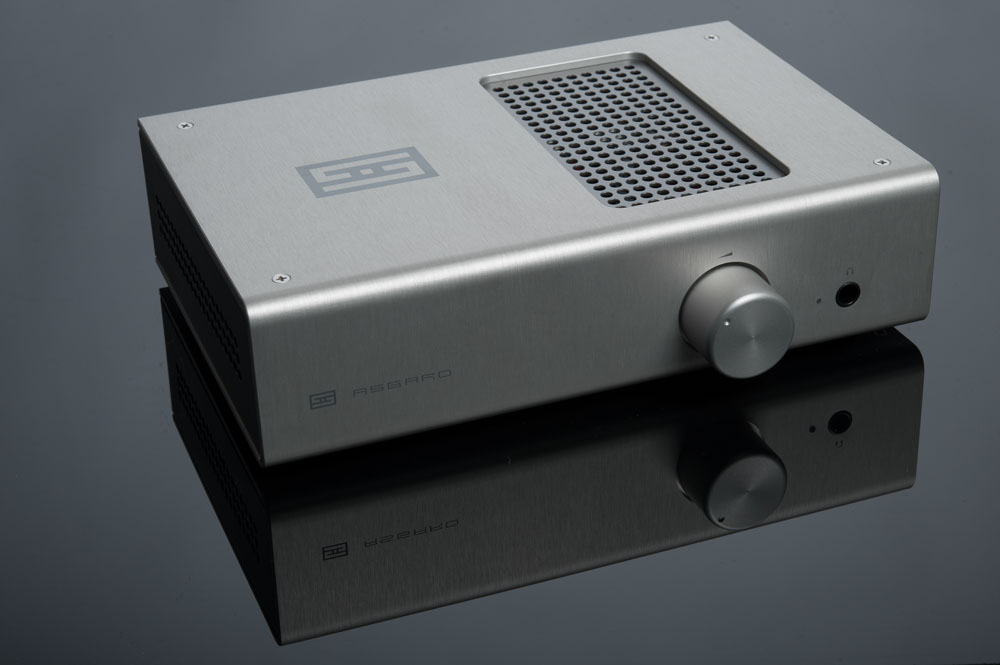
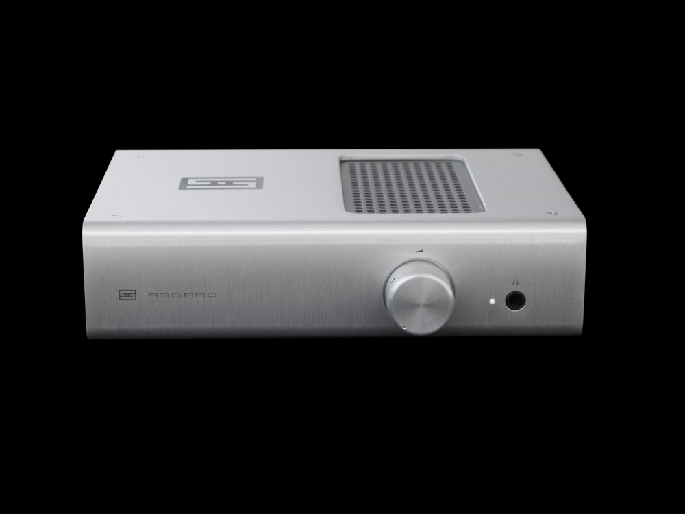
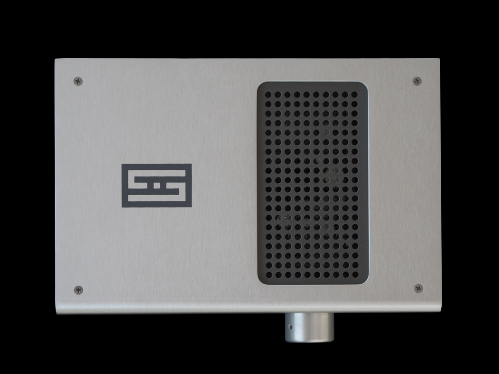
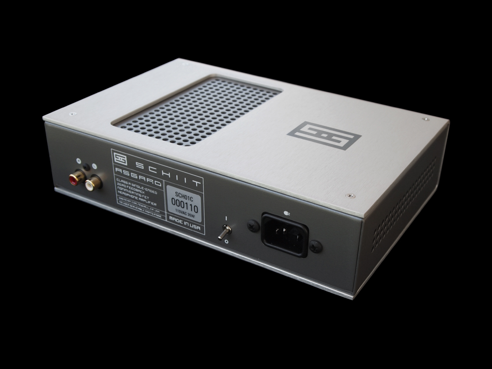
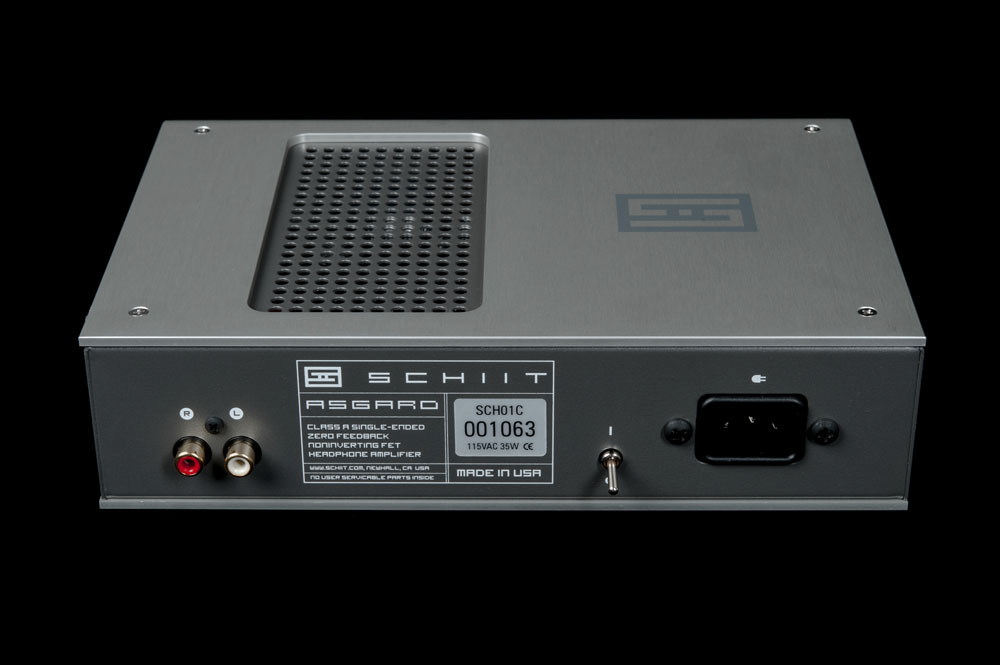
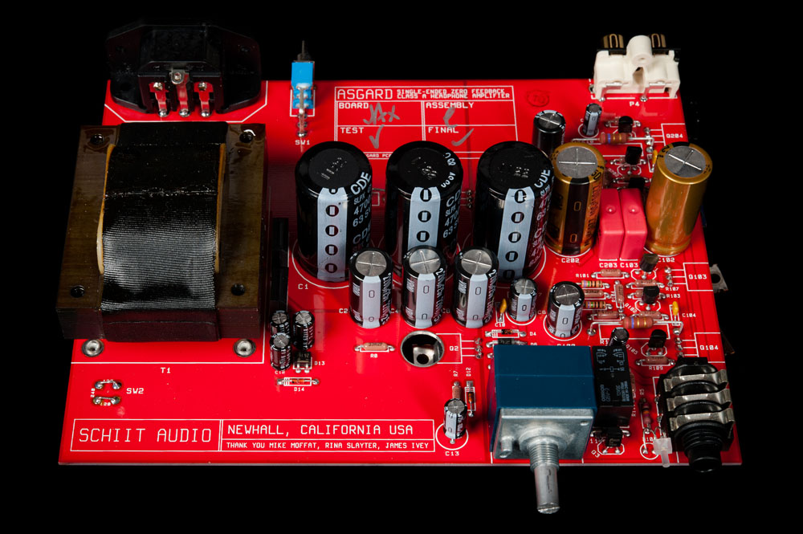

Asgard 1
Released: 2010/06/01
Category: Headphone Amps
Asgard is a fully discrete, Class A, single-ended FET headphone amplifier with no overall feedback and a noninverting circuit topology. Its high-current design makes it uniquely suitable for low-impedance headphones.
Now, if you’re an engineer, the preceding paragraph probably means something to you. For everyone else, let’s simplify it: Asgard will sound friggin tremendous on virtually any headphone you throw at it, from $39 cheapies to those $1400 monsters you’ve been wanting to try. Asgard will even drive them to ear-imploding levels, if that’s what you’re into. And Asgard will do this for years and years, with no maintenance or tube replacements.